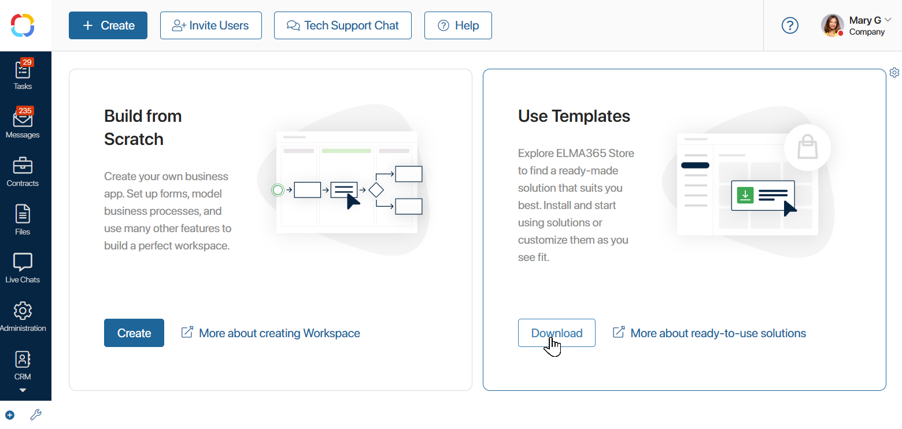
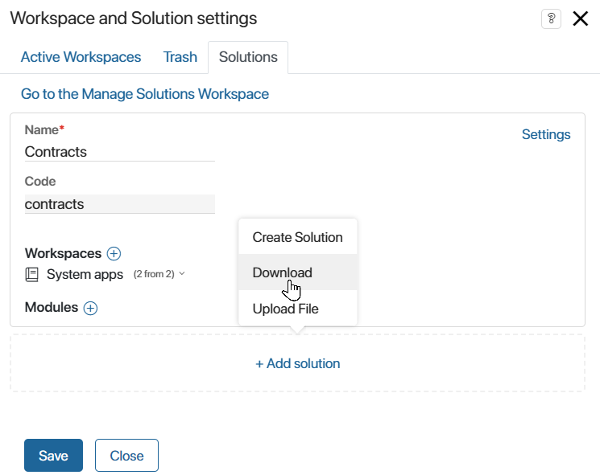
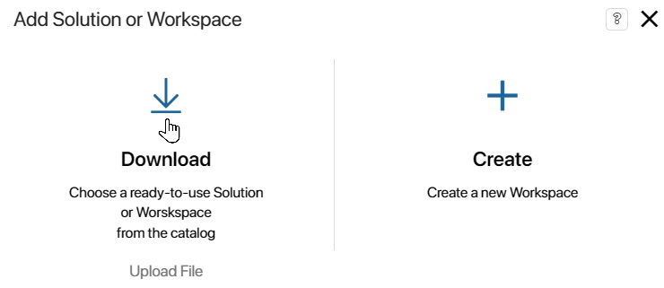
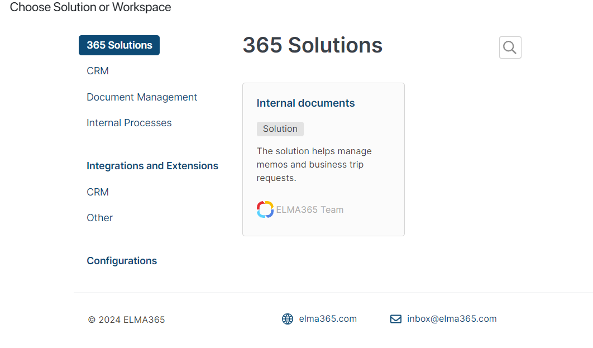
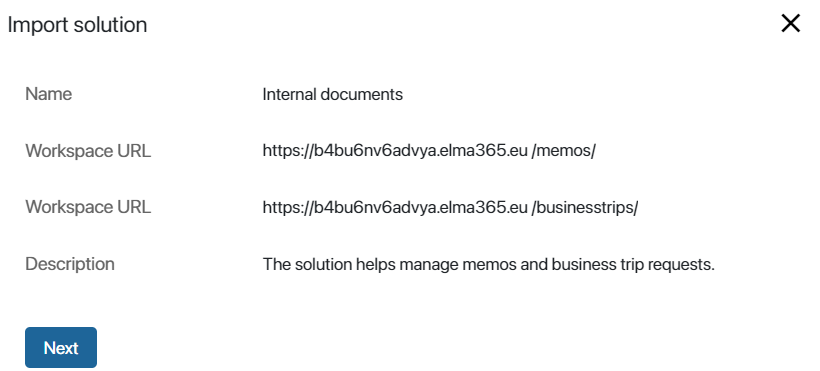
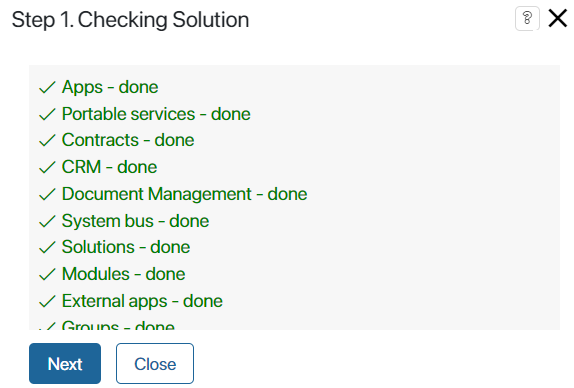
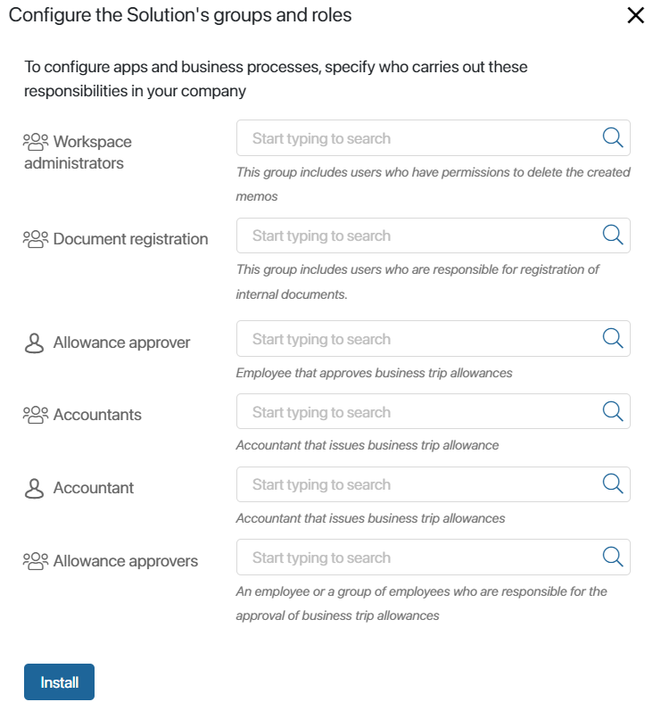
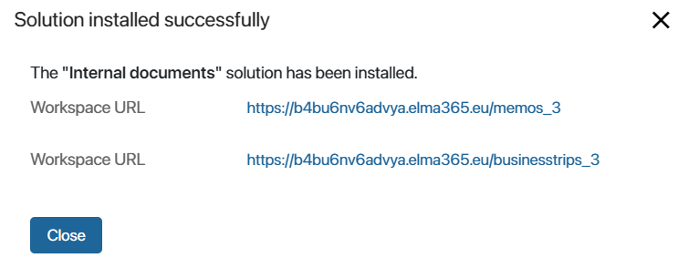

By importing a ready-made business solution from the BRIX Store, you add all the components included in it to the system: modules, workspaces, apps, pages, custom widgets, separators, links, business processes, scripts, etc. If the business solution contains changed system workspaces, similar workspaces and their components, such as apps and business processes, will be updated in your company after installation.
You can upload your business solution in a way that is convenient for you:
- On the home page of the system by clicking the Download button in the Use Templates section.
- On any page of the system by clicking
 or in the left menu.
or in the left menu. - On the Administration > Manage Solutions page by clicking +Solution.
- Directly from the BRIX Store. This option can be used for the cloud version of the platform.
- Download a .e365 file from the BRIX Store, and then import the solution from this file.
Import a solution on a system page
Perform the following steps:
- Go to the BRIX Store in one of three ways:
- On the home page of the system click the Download button in the Use Templates section

- On any page of the system, click the icon in the left menu, and in the opened window, click on the Solutions tab. Click +Add solution and select Download.

- On any page of the system, click the icon in the left menu. In the opened window, select the Download option:

- On the Administration > Solutions page, click +Solution and select Download in the opened window.
The catalog contains solutions developed by BRIX, such as Compliance Management, as well as solutions exported by our partners.
You can find the solution by name. To do this, start typing it in the search bar, then press Enter. You can also filter solutions by selecting specific categories. For example, generate a list of only those solutions that are compatible with your platform delivery.

- Click the solution page in the list. In the opened window, view information about the compatibility of the solution with your platform delivery. Read the description and workspaces of the solution.
To find out the cost of a paid solution, contact your BRIX rep. To do this, click Price.
- To start importing, click Try (for a paid solution) or Install.
If the solution was installed earlier, you can proceed to update it. To do so, click Continue in the opened window.
Important: if in BRIX On-Premises you download a solution created or modified in a newer version of the system (for example, 2024.4) than your current version (for example, 2024.1), a warning notification will appear. The import may fail or the solution may not work properly because the newer version may have changes that are incompatible with your version. Select cancel or continue the import process.
- In the opened solution import window, click Next.

- This step checks if there are any components in the system on which the solution depends. When the checking is complete, click Next.
 - Set the Initial solution settings. Add users to groups and assign them to roles. This data is used in the solution business processes as well as access settings. To add users, click the magnifying glass icon and select the desired role or employee from the opened list. You can skip this step and come back to it later.
 - Click Install.
- When the installation is complete, click Close.

The components included in the solution will be added to the company. The modules will be displayed in the Administration > Modules workspace, the workspaces will be available in the left menu. At the same time, system workspaces will be updated, for example, additional properties will be added to the app context, and new versions will be created for forms, widgets, and business processes.
The solution and its components are locked during import. This means that users will be able to work with them, but will not be able to change them.
To be able to change components, unlock the solution. You can then delete and edit components. You can also restore previously configured or original versions of forms and widgets, as well as business processes.
Import a solution directly from the BRIX Store website
If you are using BRIX cloud delivery, you can proceed to import the solution directly from the BRIX Store. To do this:
- On the BRIX Store website, search for a solution by name using the search bar or apply filters.
- Click on the solution page. In the opened window, view information about the compatibility of the solution with your platform delivery. Also, review the solution description and the workspaces included in the solution.
- If a free solution is selected, click Install. On the paid solution page, you can contact the BRIX manager to find out the cost of the solution. To do this, click Price. To proceed to the installation of the paid solution, click Try Free.
- In the opened window, select the option of authentication in an existing company by clicking Sign In.
- Enter your email and password to sign in to your system and click Sign In again. After that, you will see your company address. Click on it and sign in to the system.
If the solution was installed earlier, you can proceed to update it. To do so, click Continue in the opened window.
Important: if you download a solution created or modified in a newer version of the system (for example, 2024.4) than your current version (for example, 2024.1), a warning notification will appear. The import may fail or the solution may not work properly because the newer version may have changes that are incompatible with your version. Select cancel or continue the import process.
- The solution import window will be displayed. The next steps are similar to steps 4–8 of importing a solution from a system page.
Download a .e365 file from the BRIX Store
Follow the steps below:
- On the BRIX Store website, search for a solution by name using the search bar or apply filters.
- Click on the solution page. In the opened window, view information about the compatibility of the solution with your platform delivery. Also, review the solution description and the workspaces included in the solution.
- Click on the Versions tab. Here you can download the .e365 file with the latest published version of the solution. You can also see the date the file was published on the website.
- To download the file, click Download.
- After downloading the file, proceed to import the solution from the .e365 file.
Compatibility of the solution with BRIX
The solution page provides information about its compatibility with different deliveries and editions of the platform.
When importing a solution from the BRIX Store or a .e365 file that is not compatible with your BRIX, you will see an error.
If you try to download such a solution from the system page in its page, you will see a notification instead of the Install button. To display detailed information about deliveries and editions compatible with the solution, as well as possible actions to install the solution, click the question mark.